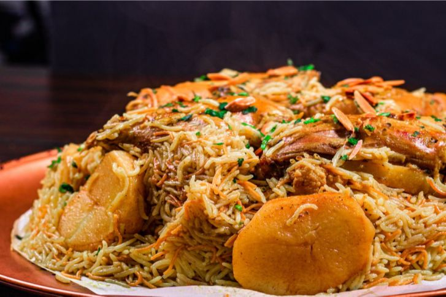

Odin Recipes
Palestinian Makloubeh (Maqlouba)

Description
Makloubeh (Maqlouba) is the most famous Palestinian dish. It is very rich in ingredients and flavours.
The meaning of makloubeh is "turned upside down" and that is because, at the end, you literally turn everything upside down before serving it.
Make sure you don't overeat (as I do whenever I have the occasion to eat Makloubeh :D )
Ingredients:
- Chicken legs
- 2 bay leaves
- 2 cinnamon sticks
- Cardamom pods (7-8 pods)
- Cumin (1 tsp)
- Black peppercorns
- Salt to taste
- 1 tsp turmeric
- A few cloves (I personally don't use many as its taste is strong. I normally use 4-5, no more)
- 7 spices mix (you can find this mix at arabic shops)
- 1 large onion
- 1 big eggplant
- 2 large potatoes
- Basmati rice (allocate 1 teacup for each person, then add 1-2 teacups more just in case it's not enough)
- Oil for frying
- Peeled almonds for extra decoration (you can also find these at arabic shops)
Steps:
- Prepare the ingredients:
Clean the chicken legs, removing any remaining feathers, and wash them well. Dice the onion. Cut the potatoes and eggplant in half, then slice them (you can also add cauliflower if you'd like). Wash the rice 2-3 times and let it soak in water.
- Heat the oil:
Add some oil to a deep pot over high heat.
- Toast the spices:
Once the oil is hot, lower the heat to medium. Add some of the spices (bay leaves, cinnamon sticks, cardamom pods, black peppercorns, and cloves), and stir for 2-3 minutes to let the flavors infuse into the oil.
- Cook the onions:
Add the diced onion and fry it until it turns golden, stirring occasionally.
- Brown the chicken:
Add the chicken legs to the pot. If they're too big to stir easily, feel free to cut them in half. Stir every 2-3 minutes until the chicken changes color.
- Boil the chicken:
Pour hot water into the pot, making sure it covers all the ingredients. Add the remaining spices (7-spice mix, cumin, turmeric, and salt) and give it a quick stir. Cover the pot and let the chicken boil.
- Fry the vegetables:
While the chicken is cooking, fry the eggplant, potatoes (and cauliflower if using), then set them aside.
- Fry the almonds:
Fry the peeled almonds until they’re golden and set them aside for garnish.
- Remove the chicken:
Once the chicken is boiled, take it out of the pot and set it aside. Keep the broth—you'll need it later.
- Grease the pot:
Take a separate pot and grease the bottom with butter or ghee.
- Assemble the makloubeh:
Start by placing the chicken at the bottom of the greased pot. Next, layer the fried vegetables on top of the chicken. Drain the soaked rice and add it as the final layer.
- Add the broth:
Using a ladle, pour the reserved broth over the rice until the liquid level is about 1 finger above the ingredients.
- Cook on low heat:
Cover the pot and cook on low heat for about 50 minutes. Check to see if the broth has fully evaporated and the rice is cooked.
- Prepare to flip:
Once the makloubeh is done, remove the pot from the heat. Place a large tray over the pot.
- Flip the dish:
Hold the pot and tray tightly together and carefully flip them upside down. Gently tap the pot and tray on the counter to loosen the ingredients.
- Serve:
Slowly lift the pot away, and the makloubeh should be perfectly stacked on the tray, with the chicken on top and the rice on the bottom. Sprinkle the fried almonds over the top for garnish, and enjoy!